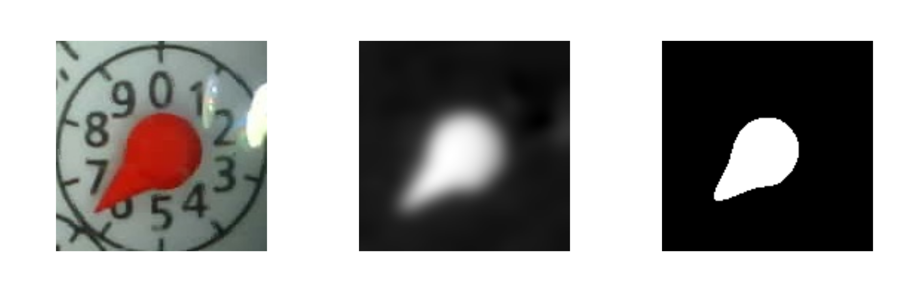

library(imager)
library(tidyverse)
library(gt)
set.seed(437)
path_img <- "../datos/medidor/"
path_full_imgs <- list.files(path = path_img, full.names = TRUE)
medidor <- load.image(sample(path_full_imgs, 1))
par(mar = c(1, 1, 1, 1))
plot(medidor, axes = FALSE)1 Introducción
1.1 ¿Qué es aprendizaje de máquina (machine learning)?
Métodos computacionales para aprender de datos con el fin de producir reglas para mejorar el desempeño en alguna tarea o toma de decisión.
En este curso nos enfocamos en las tareas de aprendizaje supervisado (predecir o estimar una variable respuesta a partir de datos de entrada) y aprendizaje no supervisado (describir estructuras interesantes en datos, donde no necesariamente hay una respuesta que predecir). Existe también aprendizaje por refuerzo, en donde buscamos aprender a tomar decisiones en un entorno en donde la decisión afecta directa e inmediatamente al entorno.
Ejemplos de tareas de aprendizaje:
- Predecir si un cliente de tarjeta de crédito va a caer en impago en los próximos tres meses.
- Reconocer palabras escritas a mano (OCR).
- Detectar llamados de ballenas en grabaciones de boyas.
- Estimar el ingreso mensual de un hogar a partir de las características de la vivienda, posesiones y equipamiento y localización geográfica.
- Dividir a los clientes de Netflix según sus gustos.
- Recomendar artículos a clientes de un programa de lealtad o servicio online.
Las razones usuales para intentar resolver estos problemas computacionalmente son diversas:
- Quisiéramos obtener una respuesta barata, rápida, automatizada, y con suficiente precisión. Por ejemplo, reconocer caracteres en una placa de coche de una fotografía se puede hacer por personas, pero eso es lento y costoso. Igual oír cada segundo de grabación de las boyas para saber si hay ballenas o no. Hacer mediciones directas del ingreso de un hogar requiere mucho tiempo y esfuerzo.
- Quisiéramos superar el desempeño actual de los expertos o de reglas simples utilizando datos: por ejemplo, en la decisión de dar o no un préstamo a un solicitante, puede ser posible tomar mejores decisiones con algoritmos que con evaluaciones personales o con reglas simples que toman en cuenta el ingreso mensual, por ejemplo.
- Al resolver estos problemas computacionalmente tenemos oportunidad de aprender más del problema que nos interesa: estas soluciones forman parte de un ciclo de análisis de datos donde podemos aprender de una forma más concentrada cuáles son características y patrones importantes de nuestros datos.
Es posible aproximarse a todos estos problemas usando reglas (por ejemplo, si los pixeles del centro de la imagen están vacíos, entonces es un cero, si el crédito total es mayor al 50% del ingreso anual, declinar el préstamo, etc). Las razones para no tomar un enfoque de reglas construidas “a mano”:
Cuando conjuntos de reglas creadas a mano se desempeñan mal (por ejemplo, para otorgar créditos, reconocer caracteres, etc.)
Reglas creadas a mano pueden ser difíciles de mantener (por ejemplo, un corrector ortográfico), pues para problemas interesantes muchas veces se requieren grandes cantidades de reglas. Por ejemplo: ¿qué búsquedas www se enfocan en dar direcciones como resultados? ¿cómo filtrar comentarios no aceptables en foros?
1.2 Ejemplo: reglas y aprendizaje
Lectura de un medidor mediante imágenes. Supongamos que en una infraestructura donde hay medidores análogos (de agua, electricidad, gas, etc.) que no se comunican. ¿Podríamos pensar en utilizar fotos tomadas automáticamente para medir el consumo?
Por ejemplo, consideramos el siguiente problema (tomado de aquí, ver código y datos):
Nótese que las imágenes y videos son matrices o arreglos de valores de pixeles, por ejemplo estas son las dimensiones para una imagen:
dim(medidor)[1] 142 142 1 3En este caso, la imagen es de 193 x 193 pixeles y tiene tres canales, o tres matrices de 193 x 193 donde la entrada de cada matriz es la intensidad del canal correspondiente. Buscámos hacer cálculos con estas matrices para extraer la información que queremos. En este caso, construiremos estos cálculos a mano.
Primero filtramos (extraemos canal rojo y azul, restamos, difuminamos y aplicamos un umbral):
medidor_rojo <- medidor |> R()
medidor_azul <- medidor |> B()
medidor_1 <- (medidor_rojo - medidor_azul) |> isoblur(5)
aguja <- medidor_1 |> imager::threshold("90%", approx = FALSE)
Logramos extraer la aguja, aunque hay algo de ruido adicional. Una estrategia es extraer la componente conexa más grande (que debería corresponder a la aguja), y luego calcular su orientación. Una manera fácil es encontrar una recta que vaya del centro de la imagen hasta el punto más alejado del centro (aunque quizá puedes pensar maneras más robustas de hacer esto):
calcular_punta <- function(pixset){
centro <- floor(dim(pixset)[1:2] / 2)
# segmentar en componentes conexas
componentes <- split_connected(pixset)
# calcular la más grande
num_pixeles <- map_dbl(componentes, sum)
ind_maxima <- which.max(num_pixeles)
pixset_tbl <- as_tibble(componentes[[ind_maxima]]) |>
mutate(dist = (x - centro[1])^2 + (y - centro[2])^2) |>
top_n(1, dist) |>
mutate(x_1 = x - centro[1], y_1 = y - centro[2])
pixset_tbl[1, ]
}Y ahora podemos aplicar el proceso de arriba a todas la imágenes:
path_imgs <- list.files(path = path_img)
path_full_imgs <- list.files(path = path_img, full.names = TRUE)
# en este caso los datos están etiquetados
y_imagenes <- path_imgs |> str_sub(1, 3) |> as.numeric()
# procesar algunas imagenes
set.seed(82)
indice_imgs <- sample(1:length(path_full_imgs), 500)
angulos <- path_full_imgs[indice_imgs] |>
map( ~ load.image(.x)) |>
map(~ R(.x) - B(.x)) |>
map( ~ isoblur(.x, 5)) |>
map( ~ imager::threshold(.x, "90%")) |>
map( ~ calcular_punta(.x)) |>
bind_rows()angulos_tbl <- angulos |>
mutate(y_medidor = y_imagenes[indice_imgs])
ggplot(angulos_tbl,
aes(x = 180 * atan2(y_1, x_1) / pi + 90, y = y_medidor)) +
geom_point() + xlab("Ángulo")El desempeño no es muy malo pero tiene algunas fallas grandes. Quizá refinando nuestro pipeline de procesamiento podemos mejorarlo.
Por el contrario, en el enfoque de aprendizaje, comenzamos con un conjunto de datos etiquetado (por una persona, por un método costoso, etc.), y utilizamos alguna estructura general para aprender a producir la respuesta a partir de las imágenes. Por ejemplo, en este caso podríamos una red convolucional sobre los valores de los pixeles de la imagen:
library(keras)
# usamos los tres canales de la imagen
imagenes <- map(path_full_imgs, ~ image_load(.x, target_size = c(64, 64)))
imgs_array <- imagenes |> map(~ image_to_array(.x))
imgs_array <- map(imgs_array, ~ array_reshape(.x, c(1, 64, 64, 3)))
x <- abind::abind(imgs_array, along = 1)
set.seed(25311)
indices_entrena <- sample(1:dim(x)[1], size = 4200)
# generar lotes de datos de las imágenes originales
generador_1 <- image_data_generator(
rescale = 1/255,
rotation_range = 5,
zoom_range = 0.05,
horizontal_flip = FALSE,
vertical_flip = FALSE,
fill_mode = "nearest"
)
generador_entrena <- flow_images_from_data(
x = x[indices_entrena,,,],
y = y_imagenes[indices_entrena] / 10,
generator = generador_1,
shuffle = TRUE,
batch_size = 64
)modelo_aguja <- keras_model_sequential() |>
layer_conv_2d(input_shape = c(64, 64, 3),
filters = 32, kernel_size = c(5, 5)) |>
layer_max_pooling_2d(pool_size = c(2, 2)) |>
layer_conv_2d(filters = 32, kernel_size = c(5, 5)) |>
layer_max_pooling_2d(pool_size = c(2, 2)) |>
layer_conv_2d(filters = 16, kernel_size = c(3, 3)) |>
layer_max_pooling_2d(pool_size = c(2, 2)) |>
layer_flatten() |>
layer_dropout(0.2) |>
layer_dense(units = 100, activation = "sigmoid") |>
layer_dropout(0.2) |>
layer_dense(units = 100, activation = "sigmoid") |>
layer_dropout(0.2) |>
layer_dense(units = 1, activation = 'linear')Ajustamos el modelo:
modelo_aguja |> compile(
loss = "mse",
optimizer = optimizer_adam(learning_rate = 0.0005),
metrics = c('mae')
)
# Entrenar
modelo_aguja |> fit(
generador_entrena,
epochs = 200,
verbose = TRUE,
validation_data = list(x = x[-indices_entrena,,,],
y = y_imagenes[-c(indices_entrena)] / 10)
)
save_model_hdf5(modelo_aguja, "cache/modelo-aguja.h5")modelo <- load_model_hdf5("cache/modelo-aguja.h5")
modeloModel: "sequential_2"
________________________________________________________________________________
Layer (type) Output Shape Param #
================================================================================
conv2d_8 (Conv2D) (None, 60, 60, 32) 2432
max_pooling2d_8 (MaxPooling2D) (None, 30, 30, 32) 0
conv2d_7 (Conv2D) (None, 26, 26, 32) 25632
max_pooling2d_7 (MaxPooling2D) (None, 13, 13, 32) 0
conv2d_6 (Conv2D) (None, 11, 11, 16) 4624
max_pooling2d_6 (MaxPooling2D) (None, 5, 5, 16) 0
flatten_2 (Flatten) (None, 400) 0
dropout_8 (Dropout) (None, 400) 0
dense_8 (Dense) (None, 100) 40100
dropout_7 (Dropout) (None, 100) 0
dense_7 (Dense) (None, 100) 10100
dropout_6 (Dropout) (None, 100) 0
dense_6 (Dense) (None, 1) 101
================================================================================
Total params: 82,989
Trainable params: 82,989
Non-trainable params: 0
________________________________________________________________________________Y observamos que obtenemos predicciones prometedoras:
preds <- predict(modelo, x[-indices_entrena,,,])
preds_tbl <- tibble(y = y_imagenes[-c(indices_entrena)] / 10, preds = preds)
ggplot(preds_tbl, aes(x = preds, y = y)) +
geom_jitter(alpha = 0.5) +
geom_abline(colour = 'red')De forma que podemos resolver este problema con algoritmos generales, sin tener que aplicar métodos sofisticados de procesamiento de imágenes. El enfoque de aprendizaje es particularmente efectivo cuando hay cantidades grandes de datos poco ruidosos, y aunque en este ejemplo los dos enfoques dan resultados razonables, en procesamiento de imágenes es cada vez más común usar redes neuronales grandes para resolver este tipo de problemas.
1.3 Ejemplo: mediciones costosas
En algunos casos, el estándar de la medición que nos interesa es uno que es costoso de cumplir: a veces se dice que etiquetar los datos es costoso. Un ejemplo es producir las estimaciones de ingreso trimestral de un hogar que se recolecta en la ENIGH (ver aquí). En este caso particular, se utiliza esta encuesta como datos etiquetados para poder estimar el ingreso de otros hogares que no están en la muestra del ENIGH, pero para los que se conocen características de las vivienda, características de los integrantes, y otras medidas que son más fácilmente recolectadas en encuestas de opinión.
Veremos otro ejemplo: estimar el valor de mercado de las casas en venta de una región. Es posible que tengamos un inventario de casas con varias de sus características registradas, pero producir estimaciones correctas de su valor de mercado puede requerir de inspecciones costosas de expertos, o tomar aproximaciones imprecisas de esta cantidad (por ejemplo, cuál es el precio ofertado).
Utilizaremos datos de casas que se vendieron en Ames, Iowa en cierto periodo. En este caso, conocemos el valor a la que se vendió una casa. Buscamos producir una estimación para otras casas para las cuales conocemos características como su localización, superficie en metros cuadrados, año de construcción, espacio de estacionamiento, y así sucesivamente. Estas medidas son más fáciles de recolectar, y quisiéramos producir una estimación de su precio de venta en términos de estas medidas.
En este ejemplo intentaremos una forma simple de predecir.
library(tidymodels)
library(patchwork)
source("../R/casas_traducir_geo.R")
set.seed(68821)
# dividir muestra
casas_split <- initial_split(casas, prop = 0.75)
# obtener muestra de entrenamiento
casas_entrena <- training(casas_split)
# graficar
g_1 <- ggplot(casas_entrena, aes(x = precio_miles)) +
geom_histogram()
g_2 <- ggplot(casas_entrena, aes(x = area_hab_m2,
y = precio_miles,
colour = condicion_venta)) +
geom_point()
g_1 + g_2La variable de condición de venta no podemos utilizarla para predecir, pues sólo la conocemos una vez que la venta se hace. Podemos ver en lugar de eso solamente las de condición normal. Consideramos además del área habitable, por ejemplo, la calidad general de terminados:
ggplot(casas_entrena |>
filter(condicion_venta == "Normal") |>
mutate(calidad_grupo =
cut(calidad_gral, breaks = c(0, 5, 7, 8, 10))),
aes(x = area_hab_m2,
y = precio_miles,
colour = calidad_grupo)) +
geom_point() +
geom_smooth(method = "lm", se = FALSE, formula = "y ~ x")
Vemos que estas dos variables que hemos usado explican buena parte de la variación de los precios de las casas. Podemos examinar otras variables como la existencia y tamaño del garage:
ggplot(casas_entrena |> filter(condicion_venta == "Normal"),
aes(x = area_hab_m2, y = precio_miles, colour = area_garage_m2)) +
geom_point(alpha = 0.5) + facet_wrap(~ (area_garage_m2 == 0))Y quizá podríamos proponer una fórmula simple de la forma:
\[Precio = a_{calidad} + b_{calidad}\textrm{Area} + c \textrm{AreaGarage} + d\textrm{TieneGarage}\]
donde los valores de \(a_{calidad}, b_{calidad}, c, d\) podríamos estimarlos de los datos. La pendiente de Area dependende de la calificación de la calidad de los terminados.
Nuestro proceso comenzaría entonces construir los datos para usar en el modelo:
receta_casas <-
recipe(precio_miles ~ area_hab_m2 + calidad_gral +
area_garage_m2,
data = casas_entrena) |>
step_cut(calidad_gral, breaks = c(3, 5, 6, 7, 8)) |>
step_normalize(starts_with("area")) |>
step_mutate(tiene_garage = ifelse(area_garage_m2 > 0, 1, 0)) |>
step_dummy(calidad_gral) |>
step_interact(terms = ~ area_hab_m2:starts_with("calidad_gral")) Definimos el tipo de modelo que queremos ajustar, creamos un flujo y ajustamos
# modelo
casas_modelo <- linear_reg() |>
set_engine("lm")
# flujo
flujo_casas <- workflow() |>
add_recipe(receta_casas) |>
add_model(casas_modelo)
# ajustar flujo
ajuste <- fit(flujo_casas, casas_entrena)
ajuste══ Workflow [trained] ══════════════════════════════════════════════════════════
Preprocessor: Recipe
Model: linear_reg()
── Preprocessor ────────────────────────────────────────────────────────────────
5 Recipe Steps
• step_cut()
• step_normalize()
• step_mutate()
• step_dummy()
• step_interact()
── Model ───────────────────────────────────────────────────────────────────────
Call:
stats::lm(formula = ..y ~ ., data = data)
Coefficients:
(Intercept) area_hab_m2
111.124 22.505
area_garage_m2 tiene_garage
12.014 3.230
calidad_gral_X.3.5. calidad_gral_X.5.6.
30.104 54.623
calidad_gral_X.6.7. calidad_gral_X.7.8.
79.565 119.639
calidad_gral_X.8.10. area_hab_m2_x_calidad_gral_X.3.5.
217.099 -7.942
area_hab_m2_x_calidad_gral_X.5.6. area_hab_m2_x_calidad_gral_X.6.7.
2.839 14.141
area_hab_m2_x_calidad_gral_X.7.8. area_hab_m2_x_calidad_gral_X.8.10.
14.221 -1.421 Y ahora podemos hacer predicciones para nuevos datos no observados en el entrenamiento:
set.seed(8)
casas_prueba <- testing(casas_split)
ejemplos <- casas_prueba|> sample_n(5)
predict(ajuste, ejemplos) |>
bind_cols(ejemplos |> select(precio_miles, area_hab_m2)) |>
arrange(desc(precio_miles)) |> gt() |>
fmt_number(columns = everything(), decimals = 1)| .pred | precio_miles | area_hab_m2 |
|---|---|---|
| 242.3 | 275.0 | 152.9 |
| 177.3 | 181.0 | 155.6 |
| 169.3 | 175.5 | 132.1 |
| 123.1 | 133.0 | 117.8 |
| 115.6 | 128.5 | 90.2 |
Y finalmente podemos evaluar nuestro modelo. En este casos mostramos diversas métricas como ejemplo:
metricas <- metric_set(mape, mae, rmse)
metricas(casas_prueba |> bind_cols(predict(ajuste, casas_prueba)),
truth = precio_miles, estimate = .pred) |> gt() |>
fmt_number(columns = where(is_double), decimals = 1)| .metric | .estimator | .estimate |
|---|---|---|
| mape | standard | 14.1 |
| mae | standard | 23.4 |
| rmse | standard | 33.3 |
casas_prueba_f <- filter(casas_prueba,
condicion_venta %in% c("Normal", "Partial", "Abnorml"))
ggplot(casas_prueba_f |>
bind_cols(predict(ajuste, casas_prueba_f)),
aes(x = .pred, y = precio_miles)) +
geom_point() +
geom_abline(colour = "red") + facet_wrap(~ condicion_venta)Este modelo tiene algunos defectos y todavía tiene error considerablemente grande. La mejora sin embargo podemos cuantificarla con un modelo base o benchmark. En este caso utilizamos el siguiente modelo simple, cuya predicción es el promedio de entrenamiento:
# nearest neighbors es grande, así que la predicción
# es el promedio de precio en entrenamiento
casas_promedio <- nearest_neighbor(
neighbors = 1000, weight_func = "rectangular") |>
set_mode("regression") |>
set_engine("kknn")
workflow_base <- workflow() |>
add_recipe(receta_casas) |>
add_model(casas_promedio)
ajuste_base <- fit(workflow_base, casas_entrena)
metricas(casas_prueba |> bind_cols(predict(ajuste_base, casas_prueba)),
truth = precio_miles, estimate = .pred)|> gt() |>
fmt_number(columns = where(is_double), decimals = 1)| .metric | .estimator | .estimate |
|---|---|---|
| mape | standard | 33.4 |
| mae | standard | 54.8 |
| rmse | standard | 77.2 |
1.4 Aprendizaje supervisado y no supervisado
Las tareas de aprendizaje se dividen en dos grandes partes: aprendizaje supervisado y aprendizaje no supervisado.
En Aprendizaje supervisado buscamos construir un modelo o algoritmo para predecir o estimar un target o una respuesta a partir de ciertas variables de entrada.
Predecir y estimar, en este contexto, se refieren a cosas similares. Generalmente se usa predecir cuando se trata de variables que no son observables ahora, sino en el futuro, y estimar cuando nos interesan variables actuales que no podemos observar ahora por costos o por la naturaleza del fenómeno.
Por ejemplo, para identificar a los clientes con alto riesgo de impago de tarjeta de crédito, utilizamos datos históricos de clientes que han pagado y no han pagado. Con estos datos entrenamos un algoritmo para detectar anticipadamente los clientes con alto riesgo de impago.
Usualmente dividimos los problemas de aprendizaje supervisado en dos tipos, dependiendo de la variables salida:
- Problemas de regresión: cuando la salida es una variable numérica. El ejemplo de estimación de ingreso es un problema de regresión
- Problemas de clasificación: cuando la salida es una variable categórica. El ejemplo de detección de dígitos escritos a manos es un problema de clasificación.
En contraste, en Aprendizaje no supervisado no hay target o variable respuesta. Buscamos modelar y entender las relaciones entre variables y entre observaciones, o patrones importantes o interesantes en los datos.
Los problemas supervisados tienen un objetivo claro: hacer las mejores predicciones posibles bajo ciertas restricciones. Los problemas no supervisados tienden a tener objetivos más vagos, y por lo mismo pueden ser más difíciles.